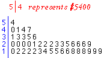
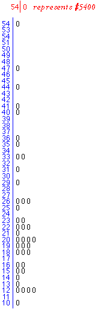

Too many or too few stems
Sometimes a basic stem and leaf plot has only between 2 and 5 distinct stems. Changing the stem units would give between 20 and 50 stems — too many classes to clearly show the density of values by the heights of the stacks of leaves.
Holiday Home Rental data
The stem and leaf plots in this section show monthly rentals of holiday houses at a beach resort.
| With the leaves as the 'hundreds' digits, most values are stacked on stems '1' and '2'. The stem-and-leaf plot does not show the shape of the distribution well within the interval 1000 to 2900 dollars. |
 |
|
However making the leaves the 'tens' digits results in too many distinct stems for a data set of this size. The stem and leaf plot is rather jagged. Also, all leaves are '0' since the raw data were recorded as hundreds of dollars, so there is no advantage over a stacked dot plot. |
 |
Extra flexibility
It is possible to extend the basic stem and leaf plot to display an intermediate number of classes (stacks of leaves).
Each distinct stem from the basic plot can be split into either 2 or 5 different classes.
This increases the number of stems by a factor or either 2 or 5.
Again the idea is explained more clearly with an example than in words.
Holiday Home Rental data
Click on the Animate button to see the stems split into two. Note the leaves that end on each stem. The slider can be used to repeat the animation more slowly.
Select Split into 5 from the pop-up menu, then repeat the animation.
Another example
Human Resources Manager Salaries
The stem and leaf plot below shows the average salaries of Human Resources Managers in all mainland states of the USA in 2012.
The salaries ranged between $68,440 (Oklahoma) and $137,850 (New Jersey), so the stems are 'ten-thousands' and each leaf is the 'thousands' digit of a value. Note that the 'hundreds', 'tens' and 'units' digits of the values are not shown on the stem and leaf plot.
The stem and leaf provide the most significant digits of each value.
Click on the top leaf of '7' that is drawn against the stem '13' and observe that it corresponds to the value 137850 dollars. Drag with the mouse over other leaves and observe how each value is represented in the diagram.
(You may notice that the values are not rounded to the nearest leaf digit, but are truncated. This is done to simplify drawing the plot by hand and should not affect your interpretation of the plot.)
Interpretation
Note carefully that the diagram shows the distribution of average salaries in the states, not the distribution of individuals' salaries. Salaries of individuals will be much more variable. For example, none of the states have average salaries higher than $140,000 but senior human resource managers in any state will earn much more than this, balanced by newly appointed staff who get low wages.